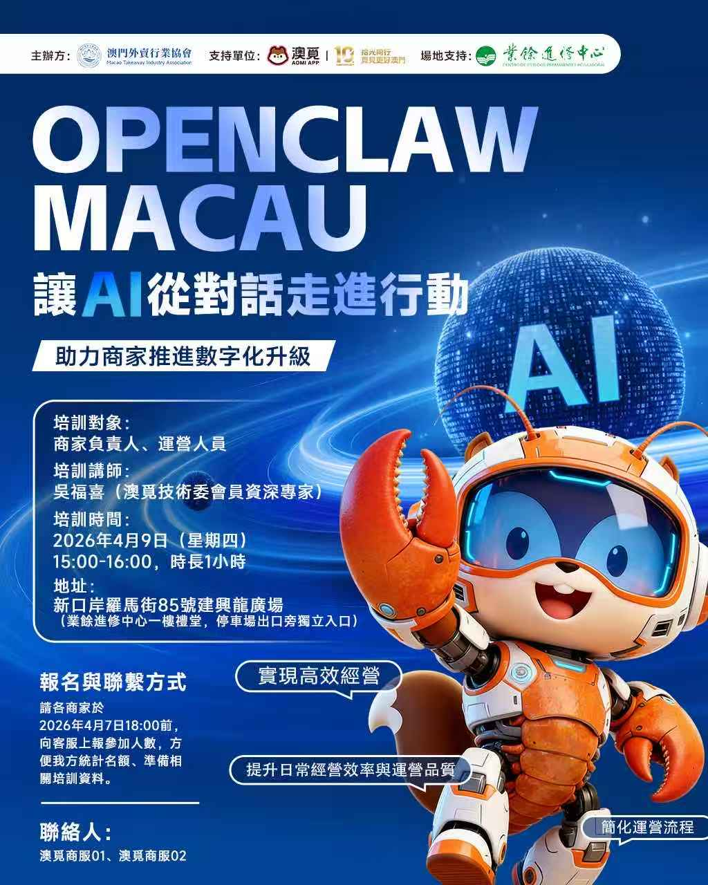
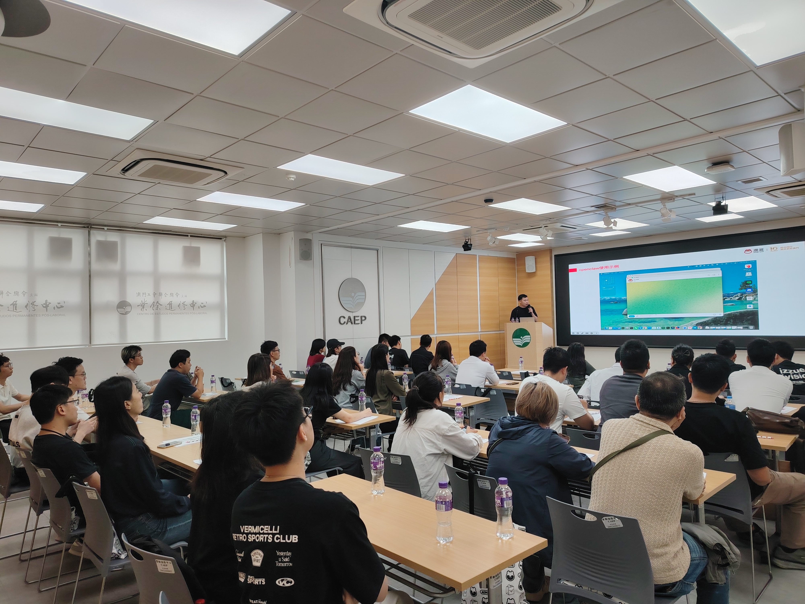

场景化理解
从“今天想吃什么”进一步理解为“谁在吃、什么时候吃、想要什么体验”。
通过理解兴趣、场景和上下文，主动输出更合适的内容与决策建议，将推荐能力从被动响应升级为主动引导。
将推荐入口升级为智能导购入口，降低用户决策成本，同时提升推荐承接率与后续转化效率。
📊 目标：使用率 10%。当前用户访问约 1 万，使用率约 1%。主要问题：输出速度慢、输出内容不够精准，需重点优化。
从“今天想吃什么”进一步理解为“谁在吃、什么时候吃、想要什么体验”。
欢迎页与回复示例形成完整闭环，降低首次使用门槛。
让搜索不仅匹配关键词，还能理解用户真正想解决的问题，主动扩展可选结果，提升搜索的“惊喜度”和“命中度”。
让搜索从检索工具升级为需求理解工具，提高搜索召回质量，并扩大结果对成交场景的承接能力。
📊 目标：解决输出速度慢、搜索准确度不足、输出门店效果差等问题，提升搜索转化率。现状：访问约 5000，效果待提升。
把用户最难消化的“海量评论”变成几秒可读的判断依据，并且支持从和自己消费习惯相似的人群视角查看总结。
把评论资产从信息堆积转为决策资产，帮助用户更快判断是否值得消费，也提升评论内容的业务利用率。
从几百条评论中直接抽出环境、口味、服务、性价比等关键结论。
支持按相似用户与标签维度总结，更贴近目标用户的真实偏好。
自动扫描竞对社媒动态、负面评论和讨论趋势，并根据内容维度自动路由到对应责任人，缩短从发现问题到开始处理的时间。
📊 目标：第一时间捕捉风险信号，由被动变主动，缩短响应链路。
将舆情发现、责任分发和竞品观察整合到同一套机制里，帮助管理层更早发现风险并更快组织响应。
围绕“洞察用户 - 优化策略 - 自动选品 - 自动出素材 - 自动配置后台”形成完整闭环，将营销效率提升从单点能力扩展为系统能力。
把营销从人工串联流程升级为自动化闭环流程，显著缩短活动从策略形成到上线执行的周期。
根据身份与消费习惯自动挖掘用户画像，为后续策略提供基础。
根据每次推送效果反向总结，持续优化内容与推荐组合。
自动生成专题页头图、推广文案与推送通知，提高投放效率。
连管理后台操作也能自动处理，避免最后一步仍需大量手工配置。
面向真实社媒环境的自动化增长工具，不只是“批量发评论”，而是结合风控策略、热点判断、商品识别和人格切换的智能评论系统。
把评论营销从低效人工操作升级为可持续、可复盘、可动态调优的增长能力，兼顾曝光效率与账号安全。
招聘信息往往是最早暴露业务方向、组织变化与扩张重点的信号。自动监控竞对在 BOSS 直聘上的岗位发布，可以帮助 HR 和业务更早判断市场动向。
📊 目标：为人才竞争与业务情报提供早期预警，薪资与职位分析支撑决策。
将招聘信息转化为竞品情报输入，帮助组织更早识别市场动作、岗位趋势与潜在人才竞争压力。
不再只靠 HR 人工理解 JD 和筛简历，而是让 AI 先构建岗位能力模型，再基于反馈持续优化搜索策略，最后自动完成候选人评估与通知推送。
📊 目标：标准化筛选流程，提升招聘效率与一致性，增强筛选结果可解释性。
将岗位理解、候选人搜索和评估流程标准化，提升招聘效率的同时增强筛选结果的一致性和可解释性。
结合行业最新岗位要求和公司需求，抽象出可执行的能力模型与评分体系。
根据业务反馈不断调整搜索策略，多角度找到更贴合的候选人。
对每份简历给出结构化评估，合适时自动通知 HR 并附简版报告。
基于反馈持续修正模型与搜索策略，逐步提升岗位匹配精度。
这是最贴近日常经营管理的一类 AI 助手。它不只是提醒，而是持续围绕目标、项目进度、业务数据和周报待办做自动跟进，帮助负责人把事情真正推进下去。
📊 目标：将管理动作系统化，降低跨团队协同成本，减少遗漏风险。
将经营管理中的跟进动作系统化、自动化，帮助团队更早识别偏差、更快推动协同，并持续提升执行闭环质量。
通过 AI 调度器实现从需求文档到可验收代码的全自动流转。引入多模态页面截图 MCP，替代单一结构化解析，精准还原 UI 效果，降低大模型幻觉率。
交付周期缩短 20%，代码可用率 ≥70%，视频生成系统目标变现 10 万/月
将开发效率从人工编码提升为 AI 驱动自动化，缩短交付周期，降低沟通损耗。
在调度器新增 /design 目录存放静态截图，替代结构化解析，精准提升 UI 还原度
建立更细粒度的需求拆解规范，缩短单次大模型推理链，降低幻觉率
后台 CRUD 与 H5 共用接口契约，减少重复劳动与对接误差
针对 AI 容易产出与预期偏差、代码难管控、人机交互不可追溯等问题，引入规格驱动开发 (SDD) 理念，选择 OpenSpec 作为实践框架，将 AI 能力植入研发全流程。
研发提效 20%，测试用例可用率 ≥75%
规范人机协作流程，确保代码全生命周期可追溯，提升团队协作效率与产出质量一致性。
规范需求、设计、开发、测试全流程，AI 能力全程嵌入
基于 OpenSpec 产出测试用例，可用率已稳定在 70%~80%
统一团队协作规范，新业务需求直接复用模板快速启动
针对商家经营难题，整合 AI 能力，从提升商家营运效率、门店营业额、广告效果等方面，打造具备「自然语言交互」与「自动化决策建议」能力的智能助手，赋能商家经营成长。
经营分析耗时降低 70%，商家平均 ROI 提升 20%
4/30 内测版上线 · 5/31 MVP 版上架 · 7/31 全量开放
评价处理与经营分析耗时降低 70%；AI 广告投放指引提升商家平均 ROI 20%。
第一时间感知用户不满，AI 立即生成回复建议，商家一键采纳
AI 自动汇总当日数据，生成经营分析，无需人工整理
根据商家画像与历史数据，自动给出投放策略建议，提升 ROI
定期对商家组织 AI 相关培训会议，旨在打造公司的高科技形象，提升商家的平台黏性。已成功举办首场培训，接下来计划开展 AI 视频项目培训及 AI 商家小助手培训。
每月一场AI培训，计划覆盖全量商家，科技赋能口碑建立
4月初首场已完成 · 持续每月一场
提升商家平台黏性，树立公司科技赋能形象，将 AI 能力从内部研发延伸为外部生态赋能。
组织多场面向商家的实操培训，现场演示 AI 工具应用
优先扶持头部商家使用 AI 工具，形成示范效应
建立商家交流社群，持续输出 AI 应用案例与最佳实践



用户通过对话，AI 就能完成外送下单全流程：自动匹配喜爱商品与规格、自动填写配送信息、自动用满平台优惠，把传统多步骤点餐流程压缩成一键完成的极简体验。同时接入智能营销，实现优惠领取「零门槛」。
下单转化率提升 10%，打造 AI 生活超级入口
4/15 基础营销闭环上线 · 6/06 澳觅十周年 AI 品牌升级正式发布
实现优惠领取零门槛、活动触达高效率；下单转化率目标提升 10%，打造 AI 生活超级入口。
对话即得，权益获取零门槛，精准识别用户意图并推送最适合的优惠
用户说出需求，AI 自动完成规格匹配、信息填写、优惠叠加
AI 自动记忆用户口味偏好，下次点餐更懂用户
通过多 Agent 方式搭建，覆盖公司各部门岗位的所有职责与具体事项，让 AI 赋能日常工作全流程。下周将以市场部自媒体内容生成事项作为试点，验证方案效果。
降低 40%+ 人力损耗，内部工作流标准化与智能化
将各部门高频重复劳动全面自动化，预计降低 40% 以上人力损耗，释放团队核心创造力。
各部门岗位对应专属 Agent，覆盖全部职责与具体事项
OpenClaw 模式 / 工作流编排模式 / 混合架构，待试点后确定
以市场部自媒体内容生成为首个试点事项，验证方案效果
构建 AI 驱动的短视频标准化产线，把视频制作从「手工业」变成「流水线」。仅供内部使用，结合新媒体部门的营销能力，通过视频内容变现。V1 服务内部运营，跑通「建单 → AI 生成 → 审核 → 归档」全闭环。
交付周期从天级压缩至小时级，摆脱外包依赖，实现视频内容变现
V1 内部运营闭环跑通 · V2 探索自进化提示词引擎
交付周期从天级压缩至小时级，摆脱外包依赖，即梦/可灵双渠道输出，通过视频内容销售变现。
任务中心 + 角色库 + 提示词复用 + 优秀案例打星，运营只需填需求+审核
多模型输出，质量与效率兼顾，支持多种风格标签
历史任务结果持续优化生成策略，系统越用越聪明
仅供内部使用，结合新媒体营销部门能力，靠卖视频实现变现